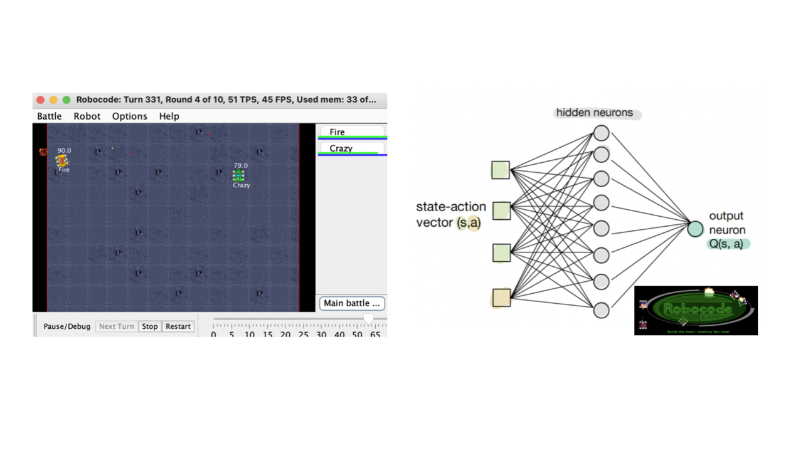

## Project Overview
This project was a hands-on exploration of Artificial Intelligence, completed as part of **CPEN 502 - Architecture for Learning Systems**. The primary objective was to develop an intelligent tank, leveraging **Reinforcement Learning (RL)** and **Neural Networks (NNs)**, to autonomously battle against explicitly programmed tanks within a game environment. Through this project, I applied machine learning techniques to design an unsupervised tank that can adapt to its environment and optimize its performance over time.
Key Features and Learning Outcomes
- Application of Reinforcement Learning: Implemented and compared the performance of Q-Learning and SARSA algorithms, utilizing a multi-layer NN to model the state space and optimize tank actions using Backpropagation.
- Neural Network Design: Built a neural network with multiple layers to approximate the Q-function, replacing traditional lookup tables. This NN was tuned for optimal performance by experimenting with hyperparameters such as learning rate, momentum, and number of hidden neurons.
- Performance Metrics: Assessed the tank’s effectiveness by tracking win rates and total rewards over numerous rounds. Different exploration rates and discount factors were tested to understand their impact on performance and convergence.
Technical Details
- Programming Language: Java
- Techniques: Q-Learning, SARSA, Neural Networks with Backpropagation
- Tools and Libraries: Custom-built NNs, Robocode simulator for environment interactions
Project Deliverables
I documented each phase of this project in a series of reports:
- Assignment 1 - Set up a basic neural network to solve simple tasks and analyzed the convergence behavior.
- Assignment 2 - Developed the intelligent tank, experimenting with on-policy and off-policy learning.
- Assignment 3 - Refined the NN-based tank, conducted hyperparameter tuning, and compared performance across different RL algorithms.
These reports provide a comprehensive view of the design choices, implementation challenges, and technical insights gained throughout the project.
Related material
You can find my project reports for more details on my approach and results: